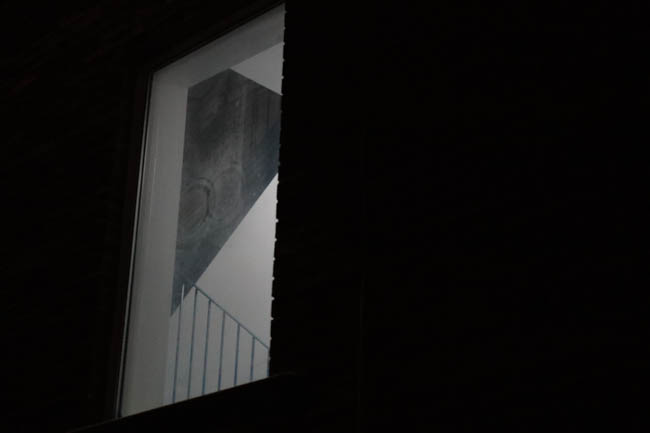

hi, this website exists to go through my history with photography, revisit different points in my life, and to answer the question "am i actually any good at taking pictures?"
earlier days
I've enjoyed taking pictures since i was a kid. I started with a Nikon Coolpix S200, which i still have to this day, and a iPhone 4 that i borrowed on occasion
unfortunately most of my pictures from back then are lost to time (or to the iPhone's dead battery), but it's something that always facinated me.
i mostly only allowed to use the camera on trips, so there aren't many pictures left from that time
here are a few interesting ones i've been able to salvage from old rips
not a very good wide view of the city, but i remember going here. i've long forgotten the name by now, and i was only 6, i remember having to drive up a very small road with no railing, where it was not very difficult to drive off and crash off the mountain. terrifying drive, okay village.a picture of my grandmother. i don't remember taking this but when i was looking through i found the angle interesting and worth taking. a lot of photos that i like from this time are made by dumb luck.i have NO clue how i could have taken this picture. if the date is to be trused i was 8. i vaguely remember this parade in boticas, mostly cause my mother made such a big deal about it, but i don't know how i could have gotten close enough for a shot like this.another anomaly shot.from a museum in ottawa, i wish i had centered it so the bulb was move visible :/it was very difficult to take a picture of this light. if i remember correctly it kept flashing and it was difficult to focus, added with the terrible shutter speed of the digicam.another nice picture taken by coincidence, i have no clue how i kept doing these. this was a different museum in ottawa during a school trip, i can barely remember it, all i remember is that they had a stable with horses in it.this one was worth including, i can remember if the shine was an internional part of the picture or not, but i think it gave an interesting quality to it, unfortunately it's very blurry so i wouldn't call it a "good" picture.
i can still recall, our
last summer (2024)
at the end of the school year i decided to bring back the digicam, in order to try and take pictues again
i then took this on my unfortunate trip to portugal, which was miserable, but i got some half decent pictures out of it.
when i was forced to make an instagram i decided to dump a few of these pictures into a post, seen below
i plan to do more posts like this in the future, recently i've been taking more photos without having the time to look back at them
here are a few more photos from around the time that didn't make the cut
a little photo against the water, taken while bored and not wanting to talk to the people i was with, a common theme with my photographya random sign i had found. for some reason i found it amusing that the letters were missingyou might recognize this one as the background on my laptop, a photo i'm proud of, but also one i had to go out of my way to get, at the dismay of my mother. The digicam wasn't the greatest at getting the fine details, so not a photo you should zoom in on.taken quickly when going to see family. we only stayed at the house for around 20 minutes, maybe less, but i got this one right before leaving.back as the same place at sunset, blurry and unremarkable, but an image i like.hey little buddy!! I love animal photography, i always take my time around animals to try and build a sense of trust so they'll let me take pictures, and you'll see more of this when we get to squirrels, my favorite :)boat... what else is there to say?very polite little cat, sat there for hours and didn't move when people came to pet her.the three pigeons lined up perfectly near my grandfather's grave, an unfortunate place for him to rest. it was a remarkable thing to see in the moment, i fear the picture dosen't do it justice.back on the island, the camera has a really bad shutter speed at night, and i always liked to play around with blurs to see what i could male
after this, college had started so i started taking pictures as a part of class, it was fun to have an excuse to take photos.
here are some stand outs from that time
part shutter speed experiment and part just a good location, although it is out of focus :/another shutter speed experiment, i really enjoyed doing thesei was really proud of this angle. at the time i was dissapointed that the sign had been cut off, but today i'm moreso dissapointed that the digicam dosen't really do the vanishing point justice here. a lot of photos at this time are held back by the camera i was usinghi little guyyyyy :)this picture is a tragedy, i like it a lot and when i got my current camera i wanted to go back to this scene to get a higher quality picture cause i thought it was such an interesting scene, but when i came back the car had gone missing :(i misremembered this image, i always thought it was Sw!p3R, but it's actually Sn!p3Ri don't remember taking this picture, apparently it was off the digicam but i have literally no recollection of it, but it's so pretty :)one of the first photos i took with my camera, an interesting sky scene taken while a kid was out with their kite, i found the contrast made for an interesting scene, unfortunately it would take a while before i learned to properly focus with my cameraanother shot of the same scene, this time incorperating the grassanother from the day i got the camera, this time in the cemetary, i took a few photos of the statues, which are just slightly out of focus, but still good when downscaled.another statue, although i would say this scene is a little too busy and takes away from the subject.i really like slamming down my white balance and taking pictures of lights, it makes for some interesting darker photos, a photo like that is used for my web2 banner.one of the only times i've used the flash on the camera, i took one without the flash and it was way too dark to properly see the statue, so i took a chance not expecting anything good to come from it. i'm quite proud of it :)
now (2nd semester)
Photography, as i do it today, is a newer thing, since i only got this camera a few months ago, so i don't have many examples, but i've more or less learned how the camera works and how to properly use it's settings and focus the lens to get what i want.

this dark shot with a lit window just bearly showing a staircase. i do love taking darker pictures such as these, and you may see more random lights in dark places. i think it provides in an interesting contrast well having a very simple subjecta simple shot of the eaton sign with some buildings visible. the compression does not do this image any favors, but it's not half bad